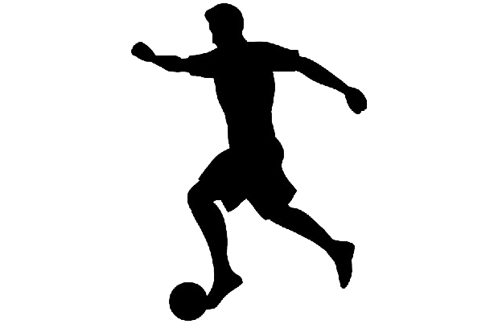

"Somos a GameStats, empresa líder em tecnologia extremamente avançada para análise de dados do
mundo do futebol. Na GameStats, nossa missão é fornecer aos nossos clientes uma tecnologia superior
que oferece segurança e precisão incomparáveis em seus dados. Estamos comprometidos em evoluir
constantemente, impulsionando o progresso neste esporte."
Passes
Nome jogador:
Quantos passes foram efetuados na partida?
Quantos foram corretos?

Dribles
Nome jogador:
Quantos dribles foram efetuados na partida?
Quantos foram corretos?
Finalizações
Nome jogador:
Quantas finalizações foram efetuadas na partida?
Quantos foram corretos?
Simulador do seu jogador!
Aqui aperecerá as informações desejadas por você, baseadas nos dados inseridos acima.